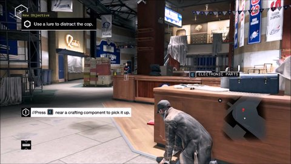
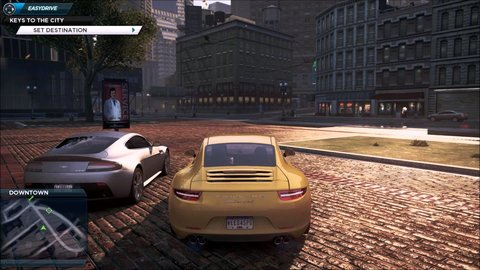
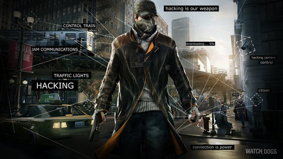

Watch Dogs Está ambientado en un futuro cercano en el que el jugador tiene en su poder infinidad de gadgets y de artilugios tecnológicos con los que sembrar el caos a su alrededor para llevar a cabo diferentes tipos de misiones. Un planteamiento mitad aventura mitad shooter que ha levantado admiración durante su presentación en sociedad.
Watch Dogs. Dos palabras que, desde el anuncio de lo nuevo de Ubisoft, se han convertido en uno de los mayores generadores de hype del mundillo. Aiden Pearce desembarca en PC y consolas con su mágico teléfono móvil dispuesto a hacer justicia. ¿Y el juego? Una aventura espectacular que no ha logrado igualar sus desaforadas expectativas, pero que ofrece mucho y aparatoso entretenimiento.
- Watch Dogs es un videojuego de mundo abierto ambientado en la ciudad de Windy City, en la línea de títulos como Assassin’s Creed o GTA
- El título mezcla exploración, acción shooter en tercera persona y sigilo.
- Tendremos la oportunidad de superar las misiones siguiendo varios caminos, según nuestras preferencias por la acción o el sigilo.
- Simultáneamente con el título se lanzará una aplicación para iPad donde tendremos acceso privilegiado a la red de datos del juego. Podremos consultar el mapa e incluso comprobar horarios de establecimientos y rutinas de los ciudadanos.
- Watch Dogs ofrece un planteamiento donde la tecnología tiene un papel fundamental, aunque el contexto interactivo se basa en el realismo ante todo, para ofrecer al usuario una experiencia lo más inmersiva posible.
  
Titulo: Watch Dogs
Año: 2014
Genero: Accíon
Tamaño: Pesa un chingo :v
Editor: Ubisoft
Descarga aquí
Contraseña: kev.perron